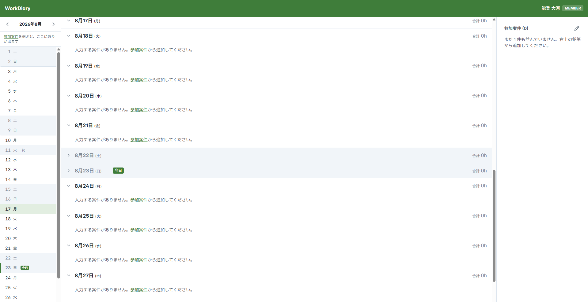
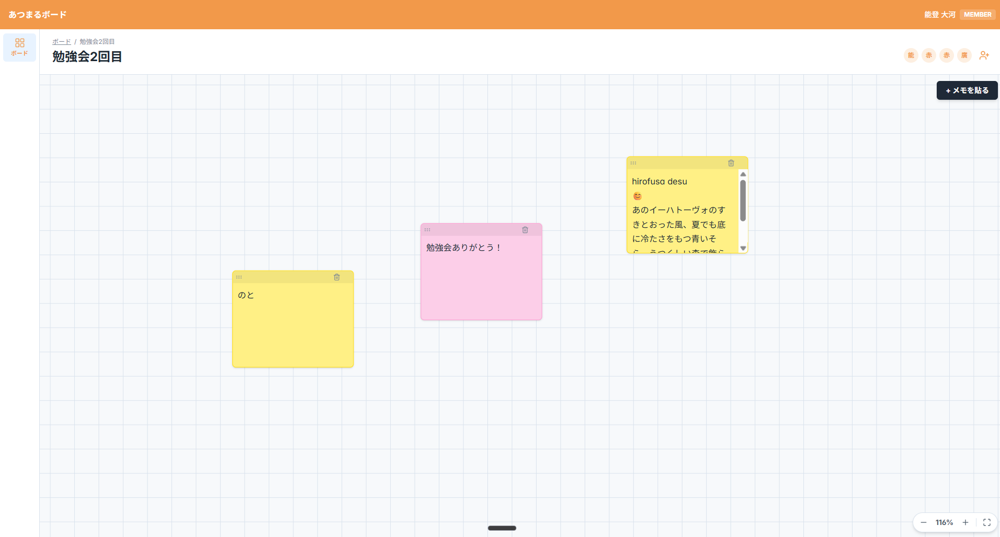
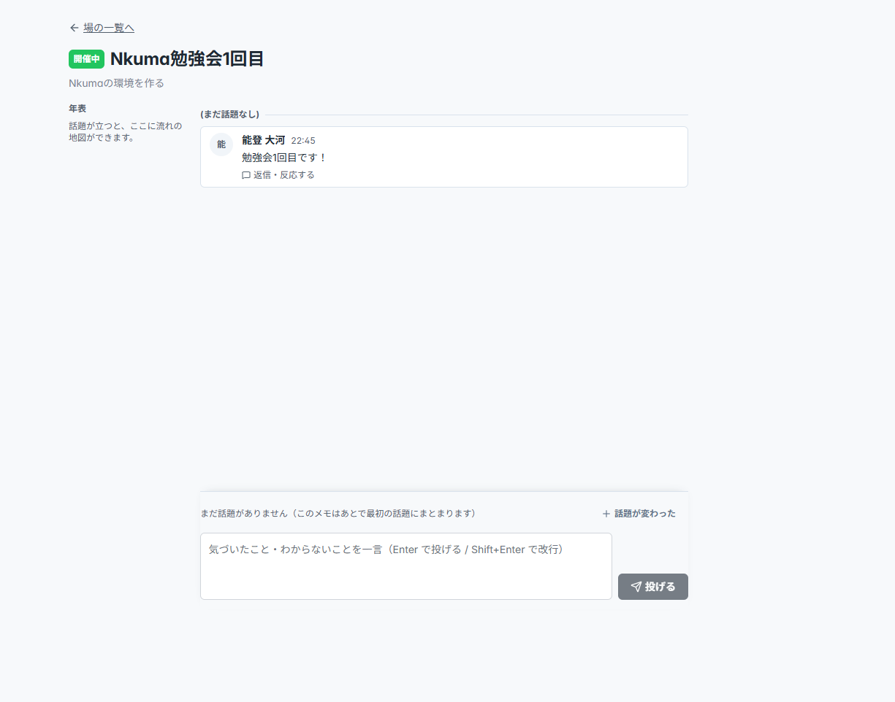

作る人のフレームワーク
業務の話をする。
それが、会社の決めた形で
アプリになっていく。
作る人は、自分の業務を話すだけ。Agent が聞き取り、決められた形に沿って組み立て、公開まで運ぶ — 作る人 × AI の開発基盤。
目次
この資料の流れ
現場の 3 つの問題に、3 つの答え (第 3〜5 章)。その先に生まれるメリットと、届け方。
- 第 1 章Nkuma は何ができるのか業務の話をすると、会社の決めた形でアプリになっていく
- 第 2 章Claude Code と何が違うのか現場に残る 3 つの問題と、作り切るということ
- 第 3 章何のために作ったのか、分からない答え ① 業務から作る — 作るものを明確にし、仕様にして作り上げる
- 第 4 章安全に動いているのか、分からない答え ② 構造で安全にする — 事故が「起こせない」構造
- 第 5 章作った本人しか、使えない答え ③ 合図ひとつで公開する — 検査を通ったものだけが届き、いつもの社内 ID で使える
- 第 6 章業務情報の上にアプリが展開されるメリット業務の変更に追いつく / AI から使われる口が付く / 使う Agent にもなる
- 第 7 章提供方法どう売り、どう届き、どう動くか
第 1 章
Nkuma は何ができるのか
業務の話をすると、会社の決めた形でアプリになっていく。
作る人がすることは、業務の話をすること。あとは会社の決めた形に沿って、少しずつ組み上がっていく。
作り方を知らなくてよい。話した内容が文書になり、決められた形で組み上がり、使える状態まで運ばれる。
これは、Nkuma で作った実際のアプリです。
南国ソフトの社内で動いている。話すところから始めて、この画面まで届く。


第 2 章
Claude Code と何が違うのか
現場に残る 3 つの問題と、作り切るということ。
AI でアプリが作れるようになった現場には、3 つの問題が残る。
作れはした。けれど、使われていない。
Claude Code は作れる。Nkuma は作り切れる。
3 つとも、作れた後に起きる。Claude Code は「動くものを素早く書く」道具。Nkuma はその上で、業務に即したアプリを作り、安全に、公開まで届ける — 作り切る。
3 つの問題には、3 つの答えを用意している。
Nkuma で作る、全体の流れ。
第 3 章
何のために作ったのか、分からない
答え業務から作る — 作るものを明確にし、仕様にして作り上げる
- ① 業務から作る
- ② 構造で安全にする
- ③ 合図ひとつで公開する
本当に困っていたことが伝わらないまま、思っていたのと違うものが出来上がる。
作り始めた動機は確かにあった。それが形になる途中で薄れていく。
原因は 2 つ — 伝え方と、覚えさせ方。
言いたいことを言葉にしきれない。そして、決めたことが会話の中に散らばって消えていく。
伝え方は Agent が聞き役になって支え、覚えさせ方は置き場を先に決めておく。
2 つの原因に、2 つの手当てが 1 つずつ対応する。
その作法は自作しない — DDD なら、Agent が最初から知っている。
DDD とは — 「仕組み」からではなく「業務」から作る開発手法。
人は話す。Agent が聞き、書く。すると業務の言葉で書かれた絵が浮かび上がる。
決めておくことは業務情報だけではない — Nkuma はそれを 6 つの層に振り分ける。
中心は domain — 業務の語彙と構造。
決めるべきことは、あらかじめ 14 に数え上げてある。
6 つの層のうち 4 層に配られている。書く前は何を書くかの指針になり、書いた後は、どこが薄いかを測る目安になる。
第 4 章
安全に動いているのか、分からない
答え構造で安全にする — 事故が「起こせない」構造
- ① 業務から作る
- ② 構造で安全にする
- ③ 合図ひとつで公開する
部品で組む部分と、自由に作ってよい部分が決めてある。
どちらにするかは、作る人と Agent が会話しながら選ぶ。表紙で言った「会社の決めた形」は、ここのこと。
部品で組む側に、Agent が自分で作ろうとしても通らない — 通るのは、部品を使う道だけ。
Agent が悪さをしうる前提に立っている。人の注意ではなく、機構が止める。
だから安全とは — 事故が「起こせない」構造のこと。
注意深さに頼らないのは、AI が書いたコードの品質が揺れるから。
Nkuma で作ったアプリでは、こんな事故が起きない。
起こせない理由は 1 つ — 鍵・権限・記録・ファイルを持つのは共通基盤 (Nkuma が用意する全アプリ共通の土台) で、アプリは持たない。
7 つそれぞれの止まり方と、構造では守らないもの
- 鍵の漏れ — アプリは鍵を持たない。接続の権限は、共通基盤だけが持つ
- 他社・他アプリのデータ — 共通基盤が接続元を確かめ、宣言の外への到達を拒む
- 全削除 — 危険な操作は共通基盤が止めるか、人の承認が要る
- 戻せない — 自動バックアップから戻せる (標準構成で 7 日 — 復元の実演はこれから)
- 記録なし — すべての書き込みを、共通基盤が記録する
- ファイル流出 — ファイルは共通基盤を通してだけ読み書きする
- ログインの穴 — ログインはいつもの社内 ID を組み込むだけ、権限は共通基盤が強制する
- 構造では守らないもの — 業務の計算の正しさ (それは品質の話。守るのは、情報と権限) / AI の出力の正しさ (構造が守るのは、秘密を持たせず、利用を記録するまで)
アプリは、データに直接触れない — すべて共通基盤を通る。
「共通基盤を使え」と指示するだけでは、すり抜けられる — だから SDK を作り、lint で強制する。
指示は忘れられるが、部品と検査は忘れない。
危ないのは、作ったアプリだけではない — 作っている最中の会話にも危険がある。
Agent は手元のファイルに触れる。秘密のファイルを読んでしまう、大切なファイルを消してしまう — そこにも手当てが要る。
Agent の動きを監視し、秘密のファイルに触ろうとしたら、プログラムが強制キャンセルする。
外部サービスの鍵やパスワードは、コードの外のファイルに置かれる。下は、実際に止められた出力。
> grep -n -E "deny|\.env|pem|\.key" nkuma/skills/nk-init/templates/settings.json ← Agent が鍵ファイル名を含むコマンドを実行しようとする nkuma hook (check-bash-secrets): 機密ファイル (.env / 認証鍵 / ~/.aws 等) への Bash アクセスの可能性を検知したためブロックしました。機密が不要な操作なら対象を変えて再実行してください (ハーネスエンジニアリング.md §4.3.2)。 [hook exit 2 — コマンドは実行されない。この例は設定ファイルを読むだけの無害な grep だが、鍵ファイル名を含むため止まる — 粗い一致・誤検知は許容の設計]
AI は、レビュー Agent の許可が無いと PR を作れない。
Nkuma は AI を使って開発していることを隠さない。下は、実際に止められた出力。
> gh pr create … ← レビュー済みの印が今のコミットと合っていない状態で、AI (Claude) が PR を作ろうとする nkuma hook (pre-pr-review-gate): レビュー済み sha (9480089f80f874d62ce57f31d0cc5418bca3a8e2) が現在の HEAD (f93c01d6494b21d2bffb577ff3982e369ea16182) と一致しません。レビュー後に commit が増えています — 再レビューして .nkuma-review-ok を更新してください。 [hook exit 2 — PR は作られない。意味: 「レビュー済み」の印が今のコミットと合わないので、作らせない]
どこに、だれが、どんなアプリを作り、どれだけ使われているか — 会社として管理できる。
すべてのアプリが同じ共通基盤を通り、同じ道で公開される。だから情報は一か所に集まる。
第 5 章
作った本人しか、使えない
答え合図ひとつで公開する — 検査を通ったものだけが届き、いつもの社内 ID で使える
公開の形は、導入する企業の内部ポリシーを伺って合わせる。
- ① 業務から作る
- ② 構造で安全にする
- ③ 合図ひとつで公開する
AI で作ったアプリは、作った本人の手元で止まる — 配る先が設計されていない。
Nkuma は、会社が決めた公開先への道をあらかじめ通してある。
作ったアプリは、合図ひとつで公開される。
作った本人以外が、いつもの社内 ID でその日から使える。
Azure 環境は用意済み — 作る人が足すのは、アプリのコンテナ 1 つ。
認証・認可は、アプリの外で済んでいる — アプリが考えるのは、ビジネスロジックだけ。
ログイン画面も認可のコードも書かない — ログインは会社の ID (Entra ID)、認可はロールの宣言 1 枚を置くだけで、強制するのは共通基盤。
作ったアプリは、公開の前に 3 つの検問を通る。
公開のたびに、アプリの版が自動で刻まれる。
第 6 章
業務情報の上にアプリが展開されるメリット
3 つの答えが揃った場所には、業務情報が残る。その上にアプリが積み上がっていく。
使い続けると、業務情報の上に、いくつものアプリが並ぶ。
エンジニアでない人が、自分の困りごとを自分で解決できている状態。
ここで満足するには早い — この構造だから、さらに 3 つのことができる。
どれも、業務情報が土台にあることから出てくる。
- ① 業務の変更を伝えれば、影響範囲の調査からアプリの変更まで進む
- ② 作るだけで、AI から使われる口 (MCP) の形も自動で付く
- ③ 作る Agent としてだけでなく、使う Agent としても働く
業務の変更を伝えれば、影響範囲の調査からアプリの変更まで進む。
この流れは、Nkuma 自身の開発で手動の型として回っている。
Nkuma でアプリを作ると、AI から使われる口 (MCP) の形も自動で付く。
この口は設計まで決まっていて、実装はこれから。図の破線がその範囲。
Nkuma は、作る Agent としてだけでなく、使う Agent としても働く。
使う側の Agent は設計まで決まっていて、実装はこれから。図の破線がその範囲。
真骨頂は、業務情報の上にアプリが乗っている構造そのもの。
到達点の絵にもう一度戻る。3 つは別々の機能ではない — 土台そのものが持っている性質だ。
第 7 章
提供方法
どう売り、どう届き、どう動くか。
Nkuma で作るのは、顧客か、南国ソフトか — 提供はこの 2 通りに分かれる。
構成図 — 手元の PC・GitHub・Azure が、1 本の経路で繋がる。
作る人は左端で対話し、送って、合図する。あとは機構が運び、一般ユーザーはいつもの社内 ID で入る。
Nkuma デスクトップアプリ (構想) — 1 つのアプリをダウンロードするだけで、開発を始められる。
Nkuma 製のアプリは、南国ソフトの社内で作られ始めている。
南国ソフトの社内の案件で、Nkuma を使って作られたアプリの例。社外の実案件での実績はこれから。

おわり
Claude Code は作れる。Nkuma は作り切れる。
図中のアイコン: Lucide — ISC License, Copyright (c) Lucide Icons and Contributors / Feather 由来分は MIT License, Copyright (c) 2013-present Cole Bemis (許諾文全文は本ファイル内のコメントに同梱)